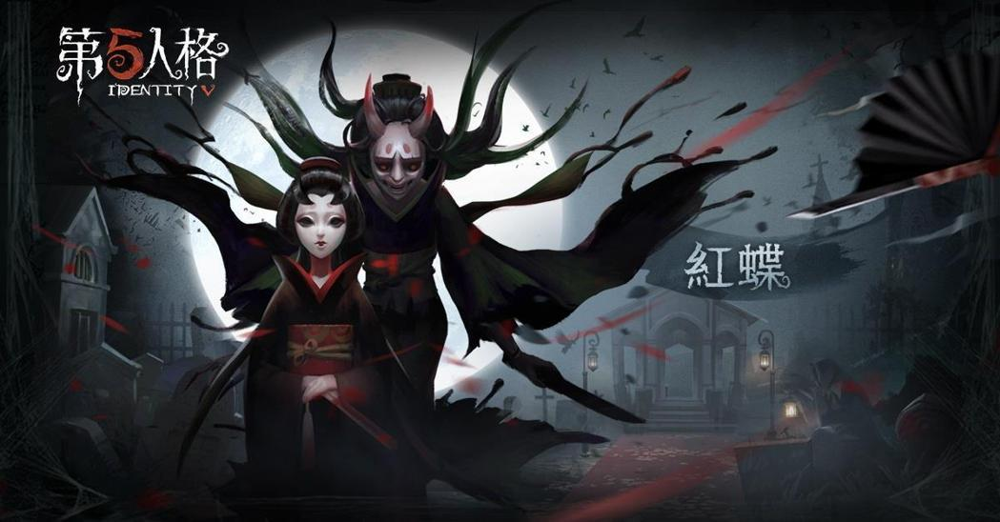
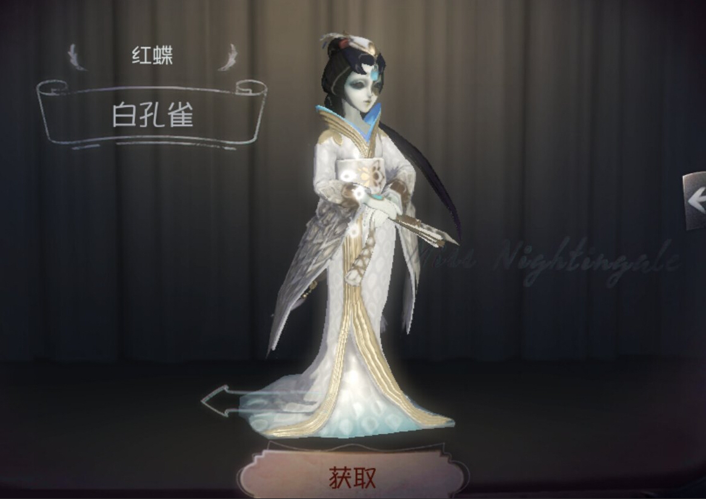

紅蝶

【人物介紹】
名字：美智子
人稱“紅蝶”的藝伎－美智子在宴會上與異國軍官邁爾斯相遇並相戀。他們在當地舉行婚禮並一同回到邁爾斯的故鄉。可這段婚姻遭到邁爾斯父親的強烈反對，他整日對美智子冷嘲熱諷，期望能將她趕出家門。不久，邁爾斯因公外出，美智子則從家中神秘消失，邁爾斯的父親聲稱她與傭人私奔，並要求自己的兒子迎娶新的妻子。 邁爾斯開始日復一日地出門尋找美智子，但沒人知道她去了哪裡。
【能力介紹】
三相之身：平靜時呈現美人相：恐懼半徑較小，移動速度較快，憤怒時呈現般若相：恐懼半徑較大，移動速度較慢;被求生者注視面部時呈現驚惶相：恐懼半徑不變，移動速度慢。
刹那生滅：進入憤怒狀態變為般若相，可無視地形衝向最接近視野中心的求生者，但被求生者注視面部時會變為驚惶相，此技能失效。
離魄移魂：進入憤怒狀態變為般若相，可躍向空中俯瞰周身環境，使用此技能可增加刹那生滅的釋放距離，但被求生者注視面部時會變為驚惶相，無法釋放刹那生滅。 求生者的畏懼提升了紅蝶的衝刺速度。
